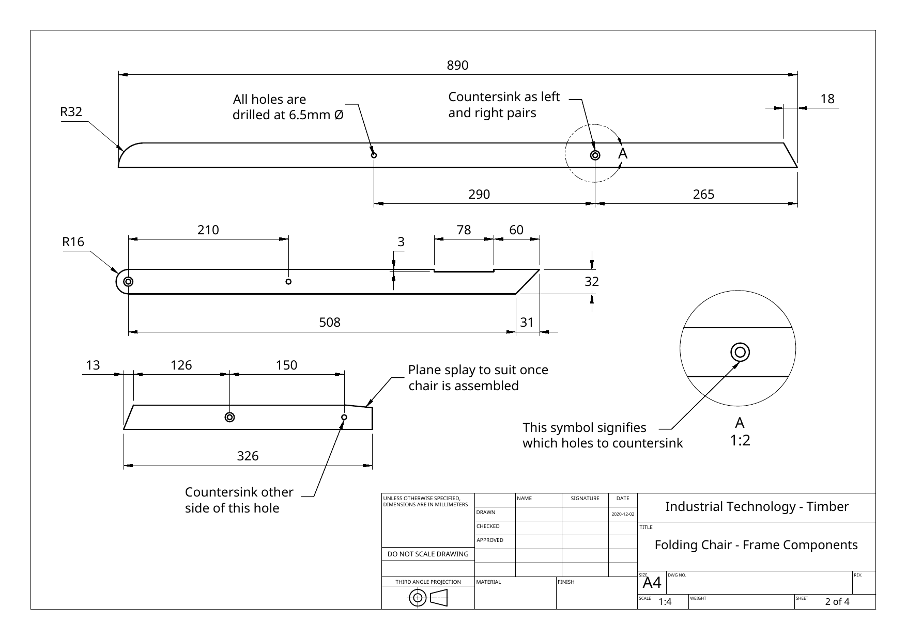
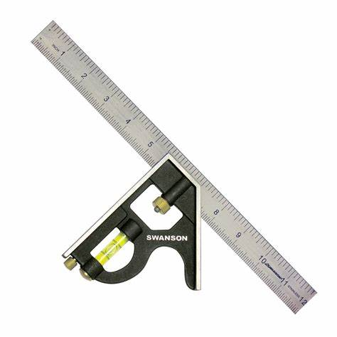
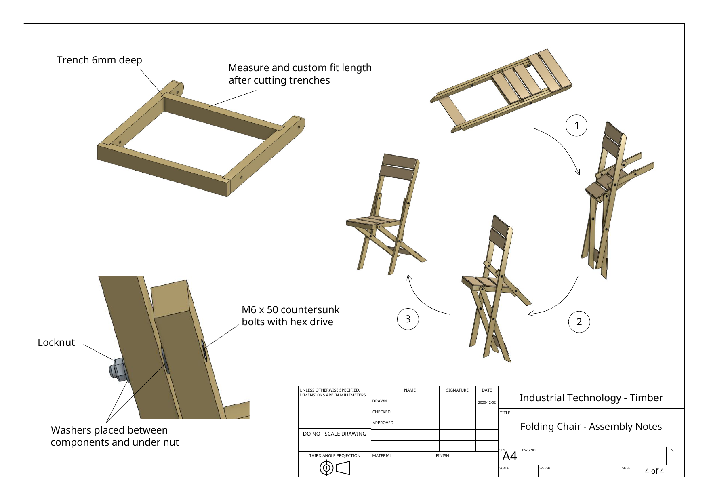

Portable drilling
Useful for suitable operations, but perpendicularity and work holding still require deliberate control.
Industrial Technology – Timber
Weeks 7–8: Drilling, countersinking, pivot hardware, dry assembly and work-method planning

Your work
Your entries save automatically in this browser. Use Print / Save PDF before leaving the page.
Two-week roadmap
Apply accurate hole-location and drilling procedures, explain the pivot hardware stack, use dry assembly as a diagnostic process and distinguish a machine SOP from a project Work Method Statement.
Theory 1

Hole centres must be transferred from the written dimensions and established reference faces. Measuring from a rounded end or a hand-shaped profile introduces uncertainty because the exact tangent or centre may be difficult to identify. A reliable end datum, face side and face edge provide repeatable starting points.
Mark the centre with two fine intersecting lines. Check the dimension chain before making a starting dimple with the approved awl, centre punch or brad-point method. The starting mark should guide the drill without crushing fibres or splitting a narrow member.
Matching parts can be stacked or paired for comparison, but drilling through a stack is only appropriate if the teacher-approved process, clamping and machine capacity allow it. More commonly, each part is drilled from its own accurately marked centre and then compared on a temporary bolt or alignment rod.
Theory 2
A drilling operation has three separate accuracy requirements: the centre must be correct, the hole must be perpendicular to the reference face, and the entry and exit surfaces must remain clean. A drill press supports repeatable vertical drilling, but only when the table, fence, clamping and setup are correct.
Check label, left/right orientation, final shape, face side and the intended outside face.
Follow the drill-press SOP; use the specified 6.5 mm bit, suitable speed and an undamaged cutting edge.
Place the timber on a backer board where appropriate and clamp it so it cannot spin, lift or shift.
Bring the stationary drill point close to the centre mark and verify the relationship from more than one direction.
Use controlled pressure, withdraw as required to clear chips and avoid overheating or forcing the bit.
Check diameter, position, perpendicularity, breakout and comparison with the matching part.
Useful for suitable operations, but perpendicularity and work holding still require deliberate control.

Chips can be projected during entry, breakthrough and countersinking.

Confirm the component and mark-out remain square before drilling.

Approved clamping holds the work securely; hands are not a substitute for a clamp.
Theory 3
A countersink creates a conical recess so a countersunk bolt head can sit flush or slightly below the surface. The recess must match the head angle and be deep enough to seat the head without removing excessive timber around the hole. A deep, oversized countersink weakens the local area and may allow the head to pull too far into the component.
The chair plan instructs the maker to countersink left- and right-hand components as pairs. The parts are dimensionally similar but mirrored in assembly, so the countersink occurs on opposite physical faces. Lay the pair in its assembled orientation, mark the outside faces clearly and check the symbol on the drawing before cutting either recess.
| Fault | Likely effect | Prevention or correction |
|---|---|---|
| Countersink on the wrong face | Bolt head appears inside, hardware stack becomes inconsistent or the component must be remade. | Arrange the parts as a mirrored pair and label the intended outside faces before machining. |
| Too shallow | Bolt head projects and may catch, look unfinished or reduce clearance. | Test with the actual approved bolt and deepen in small increments. |
| Too deep or wide | Reduced timber around the pivot and poor head support. | Use light pressure, correct cutter and frequent depth checks. |
| Off-centre recess | Bolt head seats unevenly and can pull sideways. | Use the drilled hole to guide the countersink and hold the tool perpendicular. |
Theory 4

The pivot is a moving joint. The bolt acts as the axle, but the timber members should not be crushed tightly together. Washers spread bearing pressure, create a consistent separation and reduce direct timber-to-timber friction. A washer under the nut also protects the timber and gives the nut a stable bearing surface.
A locknut resists loosening caused by repeated movement and vibration. It does not mean the nut should be overtightened. Excessive tension can clamp the timber so firmly that the joint binds, compress the fibres or pull a countersunk head too deeply into the component. Too little tension creates side play and poor stability.
Final adjustment is a controlled balance: the chair should rotate through the required range without free wobble, scraping or sudden tight spots. Hardware adjustment and load testing remain teacher-supervised.
Theory 5
A dry assembly brings the parts together without permanent adhesive or finish. Its purpose is to reveal problems while components can still be separated and corrected. For a folding chair, the test must include both static alignment and the entire path from fully open to fully folded.
Check paired members, seat level, cross-member fit and whether the assembly is racked or twisted.
Move slowly through the range and identify binding, rubbing, collision, pinch points and clearance changes.
Confirm washer locations, bolt-head seating, side play and teacher-approved nut tension.
Do not remove timber simply because movement feels tight. Binding may come from misaligned holes, a missing washer, a twisted component, an incorrectly seated bolt head or excessive nut tension. Diagnose the cause and choose the least invasive correction. Random sanding can create extra clearance without correcting the misalignment.
Theory 6
An SOP explains how to operate a specific machine or complete a standard process safely and consistently. A Work Method Statement (WMS) explains how a particular job will be completed: the sequence, equipment, hazards, controls, quality checks and response if conditions change. The two documents support one another.
| Document | Main question | Folding-chair example |
|---|---|---|
| SOP | How is this machine used safely? | Drill-press pre-start checks, clamping, speed, feed, shutdown and fault reporting. |
| WMS | How will this particular task be completed safely and accurately? | Confirm parts, mark 6.5 mm centres, drill, countersink mirrored faces, inspect, assemble and test. |
| Drawing and specification | What must be made? | Hole diameter, centre locations, countersink symbols and hardware requirements. |
| Quality record | What evidence shows it worked? | Paired alignment, clean holes, seated bolt heads, washer stack and smooth folding action. |
A useful WMS also identifies decision points. If the drill exits off-centre, the component is not automatically carried into assembly. If the dry fit binds, finishing is delayed until the cause is identified. These hold points prevent time pressure from turning a detectable fault into a permanent one.

Guided practice
Each incorrect option explains the misunderstanding. Use the hint, return to the theory and keep trying until the question is mastered.
Apply your learning
Write a genuine first attempt, check the live guidance, compare with the model and improve your explanation before self-assessing.
Finish the two-week block
Your answers save in this browser as you work, but browser storage is not the official submission. Save the completed page as a PDF before closing it.
No marks, answers or personal information are sent from this webpage.